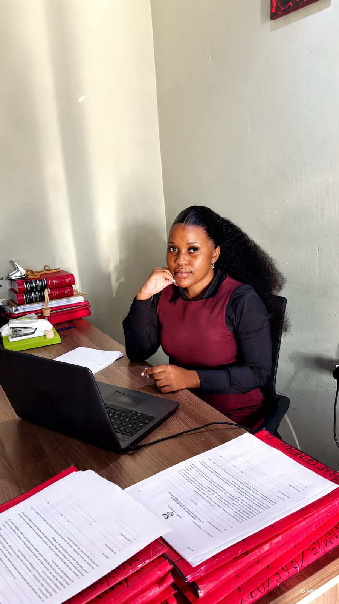

Civil Litigation
Representing clients in civil disputes from pleadings through to resolution.
Admitted Attorney of the High Court of South Africa
Martha Y. Sambo advises individuals, families and businesses across civil, commercial, labour and family law — combining rigorous legal research with the patience to explain what it actually means for you.

About Martha
Martha is an admitted Attorney with over four years of legal experience, including post-admission practice advising clients, conducting legal research, drafting opinions, contracts and litigation documents, and representing clients across civil, commercial, labour, criminal and family law matters. She is currently pursuing an LLM in Banking Law through the University of South Africa.
Before law, she taught — tutoring mathematics and supporting a classroom as a student teacher. That instinct to explain clearly and meet people where they are still shapes how she practises today.
Read Martha's full storyPractice Areas
Representing clients in civil disputes from pleadings through to resolution.
Contract drafting, review and commercial litigation support for businesses.
Employment disputes, negotiation and alternative dispute resolution.
Sensitive, practical guidance through family and personal legal matters.
The Approach
Recognised for careful, well-reasoned legal advice under real pressure.
Every pleading, opinion and contract is drafted to hold up to scrutiny.
Discretion with every client matter, from first call to final resolution.
Clear, steady communication with clients, colleagues and counterparties alike.
Experience
From candidate attorney to junior attorney at Mboweni & Partners Inc., Martha's experience spans court proceedings, client advisory, contract work and institutional legal support — including assisting with the Land Bank restructuring process.
View full experience & qualificationsMboweni & Partners Inc.
Advising across civil, commercial, labour, criminal and family law; drafting pleadings, contracts and opinions.
Mboweni & Partners
Legal research, drafting, client consultations and court preparation.
In Their Words
Space reserved for a client testimonial, once shared with consent
Space reserved for a client testimonial, once shared with consent
Space reserved for a client testimonial, once shared with consent
Get in Touch
Based in Nelspruit, Mpumalanga, and willing to travel across South Africa. Book a consultation and Martha will respond within one business day.